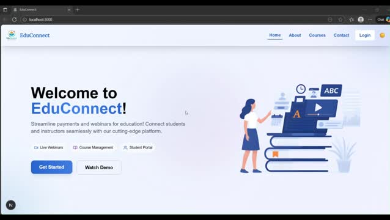
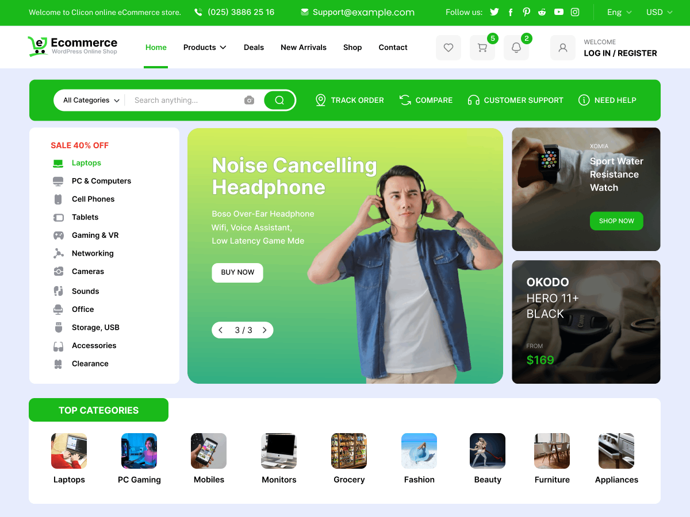
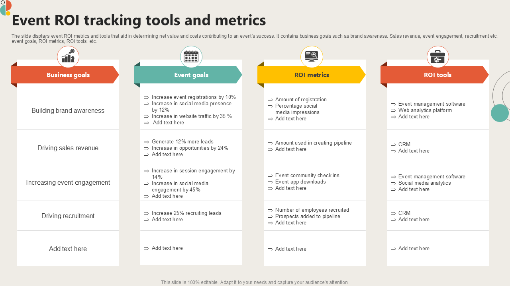

Projects
Project Portfolio Overview
Each project below includes real deliverables, technology stacks, and practical learnings from working in collaborative team environments.
1.TaskFlow Management App
.png)
Project Details
This application enables teams to create tasks, assign members, and track progress using status boards.
Features:
- Kanban board with drag-and-drop style workflow.
- Real-time task updates with polling.
- Authentication with role-based access.
Technologies Used:React, Express,SQL, Node.js, HTML5.
Challenges:Synchronizing task state across users and handling complex form validation for task creation.
Future Enhancements:Add WebSocket real-time collaboration and calendar integration.
GitHub Link
Live Demo
2.EduConnect Portal

Project Details
EduConnect is a student-teacher collaboration portal designed for assignment submission, feedback, and progress tracking.
Features:
- Role-specific dashboards for students and instructors.
- Document upload and comments section.
- Performance analytics and grade summaries.
Technologies Used:React, Firebase Authentication, Firestore, JavaScript.
Challenges:Ensuring secure access control and optimizing Firestore queries for performance.
Future Enhancements:Add mobile responsive layout and offline mode support.
GitHub Link
Live Demo
3. Freelance Portfolio CMS

Project Details
This application enables teams to create tasks, assign members, and track progress using status boards.
Features:
- Kanban board with drag-and-drop style workflow.
- Real-time task updates with polling.
- Authentication with role-based access.
Technologies Used:React, Express,SQL,Node.js, HTML5.
Challenges:Synchronizing task state across users and handling complex form validation for task creation.
Future Enhancements:Add WebSocket real-time collaboration and calendar integration.
GitHub Link
Live Demo
E-Commerce Storefront

Project Details
An online store prototype with product listings, cart management, checkout flow, and admin inventory controls.
Features:
- Product catalog with filters and search.
- Shopping cart and order summary.
- Admin interface for category and stock updates.
Technologies Used:React, Redux, Node.js, Stripe sandbox integration.
Challenges:Implementing secure checkout simulation and error handling.
Future Enhancements:Add multi-currency support and payment gateway.
GitHub Link
Live Demo

Project Details
A web application to publish upcoming events, manage registrations, and notify attendees with email summaries.
Features:
- Event listing with RSVP form.
- Registration dashboard and attendee summary.
- Automated email reminders using SMTP integration.
Technologies Used:Node.js, Express, Nodemailer, HTML forms.
Challenges:Managing form validation and ensuring email templates render correctly.
Future Enhancements:Add mobile notifications and calendar export.
GitHub Link
Live Demo
Jumb to Project
© 2026 Kiran Sai. Designed as a professional portfolio for a fresher full stack developer.